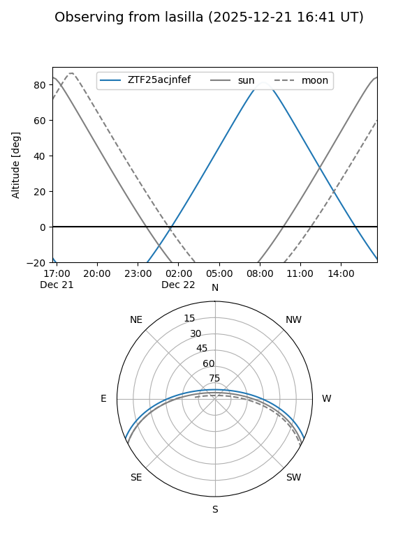
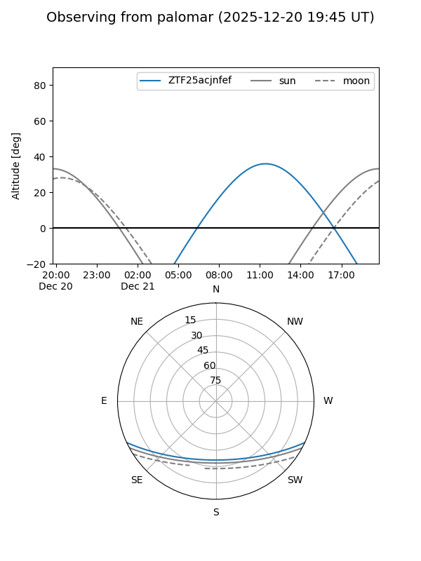

ZTF25acjnfef
Target ZTF25acjnfef at 2025-12-21 12:02
Aliases and brokers:
FINK: fink-portal.org/ZTF25acjnfef
Lasair: lasair-ztf.lsst.ac.uk/objects/ZTF25acjnfef
ALeRCE: alerce.online/object/ZTF25acjnfef
alt names
ZTF25acjnfef (ztf,fink_ztf)
Coordinates:
equatorial (ra, dec) = 144.4137,-20.53828
equatorial (HMS+DMS) = 09:37:39.30,-20:32:17.79
galactic (l, b) = (253.2884,+23.13237)
Flags:
Photometry:
last ztfg=19.69
1 ztfg detections
Lightcurve

Visibility


Additional plots